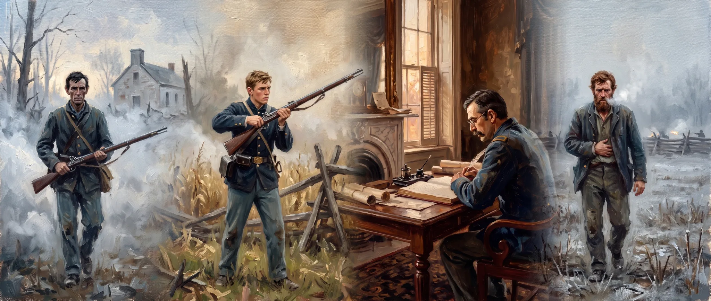

PARALLEL LIVES · 1861–1870
The Hubbell Brothers
The war as they saw and felt it — four brothers writing home from four very different wars, their separate stories unfolding inside the same great conflict.
Parallel Lives
Every dot below is one of their letters, set on the war's own calendar. Read across a row to follow a single life; read down to catch the same days through different eyes.
Click a dot to read and explore
Use arrow keys to navigate letters
Click & drag on the timeline to zoom into a range
The Archive
Drawn from 272 Hubbell family letters
·
1861–1870
·
Author, recipient & date are transcription-sourced; significance & emotion are editorial judgments.